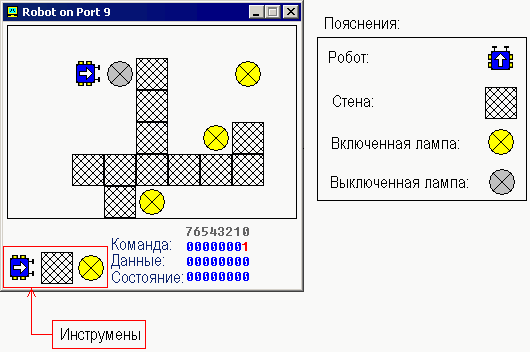

Управление внешними устройствами
Перевод: Поляков А.В. http://www.avprog.narod.ru
Эмулятор имеет три встроенных виртуальных устройства: светофор, шаговый двигатель и робот. Вы можете посмотреть эти устройства, используя меню эмулятора "Virtual Devices".
Техническую информацию ищите в разделе I/O ports.
Как правило, можно использовать любые процессоры семейства х86 для управления всеми видами устройств, различающихся в основном номерами портов ввода-вывода, которые могут быть изменены с помощью хитрого электронного оборудования. Обычно ".bin"-файл записывается микросхему ПЗУ (Read Only Memory (ROM) - постоянное запоминающее устройство - ПЗУ), система читает программу из этой микросхемы, загружает программу в ОЗУ и выполняет программу. Этот принцип используется для многих современных устройств, таких как микроволновые печи и т.п.
Светофор

Обычно для управления светофором используется массив (таблица) значений. В определенный период времени значение читается из массива и отправляется в порт. Например:
; директива для создания BIN-файла:
#MAKE_BIN#
#CS=500#
#DS=500#
#SS=500#
#SP=FFFF#
#IP=0#
; пропустить таблицу данных:
JMP start
table DW 100001100001b
DW 110011110011b
DW 001100001100b
DW 011110011110b
start:
MOV SI, 0
; установить счетчик на количество
; элементов в таблице:
MOV CX, 4
next_value:
; получить значение из таблицы:
MOV AX, table[SI]
; установить значение в порт ввода-вывода светофора:
OUT 4, AX
; следующее слово:
ADD SI, 2
CALL PAUSE
LOOP next_value
; начать с другого первого значения
JMP start
; ==========================
PAUSE PROC
; сохранить регистры:
PUSH CX
PUSH DX
PUSH AX
; установить интервал (1 миллион микросекунд - 1 секунда):
MOV CX, 0Fh
MOV DX, 4240h
MOV AH, 86h
INT 15h
; восстановить регистры:
POP AX
POP DX
POP CX
RET
PAUSE ENDP
; ==========================
|
Шаговый двигатель

Двигатель может выполнить "полушаг" при помощи пары магнитов, которые поворачивают ротор двигателя на определенный угол. Затем включается следующая пара магнитов и поворачивает ротор двигателя на следующий "шаг" и т.д.
Двигатель может выполниь полный шаг, если его повернуть парой магнитов, затем другой парой магнитов и в конце - одиночным магнитом и т.п. Лучший способ осуществить полный шаг - это выполнить его как два полушага.
Полушаг - это 11.25 градусов.
Полный шаг - это 22.5 градуса.
Двигатель может вращаться как по часовой стрелке, так и против часовой стрелки.
См. stepper_motor.asm в каталоге Samples.
См. также раздел ссылок Emu8086 I/O ports.
Робот

Полный список набора команд для робота приведен в разделе I/O ports.
Для управления роботом должен быть использован набор алгоритмов для достижения максимальной эффективности. Самым простым, но очень неэффективным является алгоритм случайных перемещений (см. robot.asm в каталоге Samples).
Можно также использовать таблицу данных (как и в светофоре). Это может быть хорошо, если робот всегда работает в одной и той же среде.